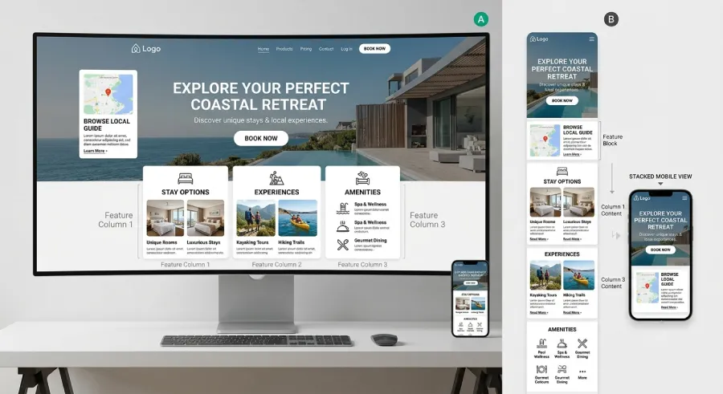

Picture the moment your website gets approved. You're sitting at a desk, a wide monitor in front of you, maybe two. The designer walks you through the homepage, section by section. Everything looks sharp, spacious, exactly like you imagined it. You say yes, and the site goes live.
Almost none of your future clients will ever see that version. They'll see a version compressed onto a screen a fraction of that size, most likely held in one hand, often in a hurry. And if that version was never actually part of the approval, you signed off on a website you'll never truly meet.
The Approval Process Nobody Questions
It's an easy habit to fall into, and an understandable one. Reviewing a website on a large screen is simply more comfortable. You can see the whole layout at once, scroll less, catch details more easily. It feels thorough. It feels like due diligence.
The problem is that comfort during review has very little to do with what most visitors will actually experience. A layout that reads clearly across a wide screen, with generous spacing and multiple columns, can turn into something cramped, slow, or confusing once it's squeezed into a phone. And if nobody deliberately checked that version before launch, the gap between what got approved and what gets used stays invisible until the inquiries start feeling thinner than expected.
Why This Matters More for You Than for a Big Brand
A large company might have a dedicated team reviewing every screen size, a QA process, analytics dashboards flagging problems within days. An independent attorney, personal trainer, real estate agent, or villa owner rarely has any of that. The approval moment, the one conversation where the site gets a final look before going live, is usually the only checkpoint that exists.
Which means that single review carries more weight than it would anywhere else. If it happens exclusively on a desktop screen, the version most of your future clients will actually judge you on never gets a real look before it's already representing you.
What Actually Changes Between the Two Versions
It's not just size. Several things behave differently once a layout moves from a wide screen to a narrow one, and none of them are obvious unless you're specifically looking for them.
Order
On desktop, information often sits side by side, a photo next to a paragraph, a headline beside a supporting image. On mobile, that same content usually stacks vertically. Whatever was on the right column may now appear far below whatever was on the left, changing what a visitor actually reads first.
Spacing and Rhythm
Generous white space on a large screen can turn into a lot of empty scrolling on a small one, pushing your key message further down than intended.
What's Actually Tappable
A button or link that's easy to click precisely with a mouse cursor can become genuinely difficult to tap accurately with a thumb, especially if two clickable elements sit close together.

How to Actually Review a Site Before It Goes Live
The fix isn't complicated, it's a matter of order. Start the review on the smallest screen you have, your own phone, held the way a client would actually hold it, one hand, on the move. Read the homepage the way a stranger would, not knowing what you already know about your own business. Only after that version feels clear and easy should you move to the desktop screen to check the larger layout.
If something feels harder to understand or slower to use on your phone than it did in the design meeting, that difficulty won't disappear once the site is live. It will simply be experienced by a client instead of by you, and you'll never hear about it directly.
The Bottom Line
A website isn't approved when it looks right to you. It's approved when it works for the person who will actually use it, on the device they'll actually use it on. If that check never happens on a phone, you haven't really approved your website. You've approved a preview of it that most of your future clients will never see.
Want a second opinion on how your website actually performs on mobile?
At Evida Studio, every review starts on the smallest screen first, because that's where most of your clients will meet you.
Let's Talk About Your Project